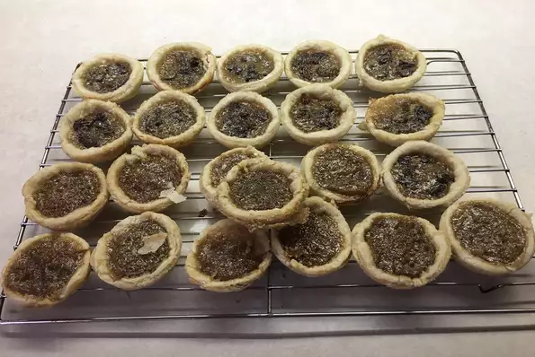

back to home
Maple Butter Tarts

Cheese cake in italian
An easy and delicious recipe
Ingredients:
- 16 (3 inch) unbaked tart shells
- 1 cup raisins
- ¾ cup brown sugar
- ¼ cup butter, softened
- 2 eggs
- ½ cup maple syrup
- 1 tablespoon all-purpose flour
- 1 tablespoon vanilla extract
- 1 pinch salt
Steps:
- Preheat oven to 350 degrees F (175 degrees C).
- Place tart shells on a baking sheet; sprinkle raisins evenly into the bottom of tart shells.
- Beat brown sugar and butter together in a bowl until smooth; whisk in eggs, maple syrup, flour, vanilla extract, and salt. Fill each tart shell 3/4 full with maple syrup mixture.
- Bake in the preheated oven until filling is set and shells are golden, about 16 minutes. Turn the baking sheet halfway through the baking time for even baking.